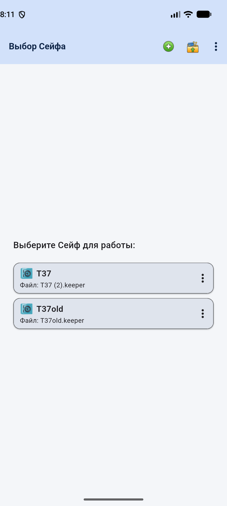
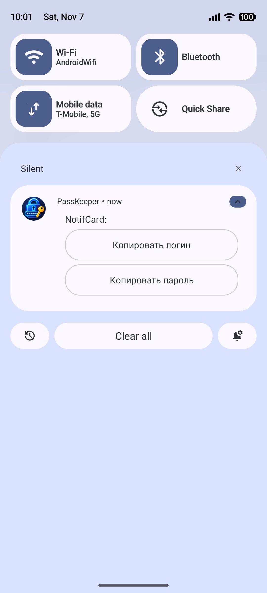
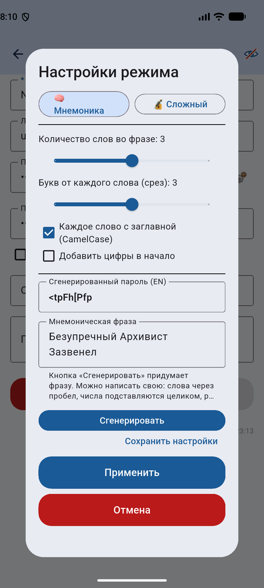
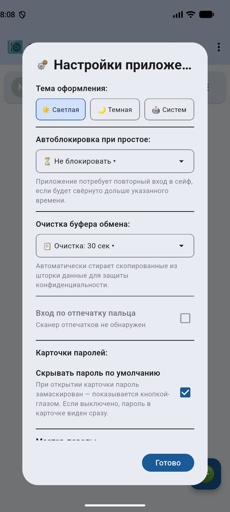
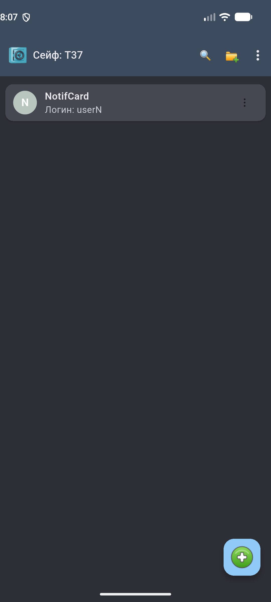

Возможности
🔒 Шифрование на устройстве
Сейф — зашифрованная база (AES, ключ из мастер-пароля, PBKDF2). Никто, кроме вас, не расшифрует содержимое.
🔐 Биометрия
Вход в сейф по отпечатку пальца — быстро и без ввода пароля.
☁️ Синхронизация через ваш Google Drive или Яндекс.Диск
Облачный сейф живёт в вашем Google Drive или Яндекс.Диске: данные ходят между вашими устройствами, минуя серверы разработчика.*
⚡ Быстрое копирование
Уведомление в шторке копирует логин или пароль одним касанием, с автоочисткой буфера обмена.
🧠 Мнемонические пароли
Генератор придумывает связную фразу на русском и собирает из неё надёжный пароль — легко запомнить, сложно подобрать.
🗂 Папки, корзина, CSV
Папки и эмодзи-иконки, корзина с восстановлением, импорт из CSV браузерных менеджеров.
🔄 Передача карточек
QR-код или файл .pkshare — передайте карточку пароля на другое устройство без облака.
⏱ Автоблокировка
Блокировка по таймеру, при уходе в фон и при выключении экрана — данные не остаются без присмотра.
* Мы крайне не рекомендуем хранить сейфы в нескольких аккаунтах облака: PassKeeper рассчитан на одну учётку каждого облака (Google Drive и Яндекс.Диск), а переключение между аккаунтами замедляет вход и может запутать синхронизацию.
Скриншоты




